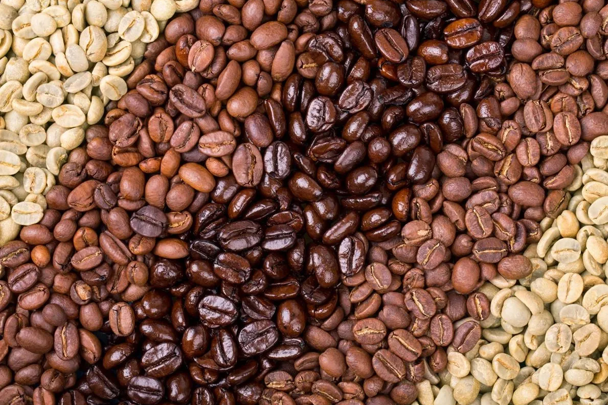

Nuestras bebidas
Comenzamos con los clásicos espressos, perfectos para aquellos que buscan un sabor fuerte y concentrado. Nuestros baristas expertos seleccionan granos de café de calidad y los muelen al momento para garantizar una taza de café llena de intensidad y aroma.
Si prefieres un café con un toque suave y cremoso, te recomendamos probar nuestros capuccinos y lattes. La combinación perfecta entre el café espresso, la leche vaporizada y la delicada espuma te brindará una experiencia deliciosa y reconfortante.
